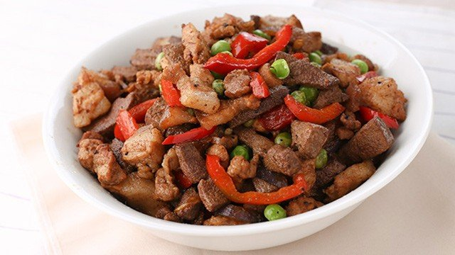
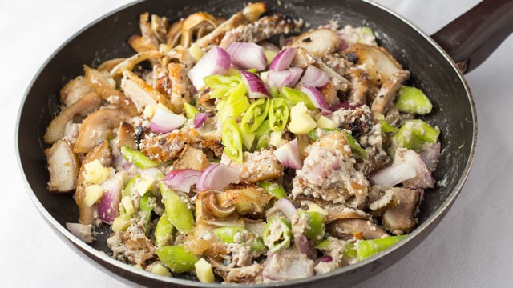
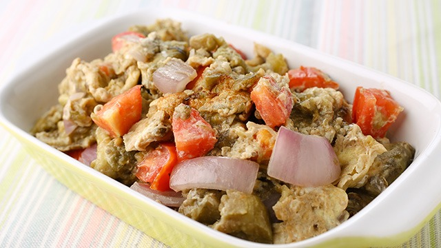
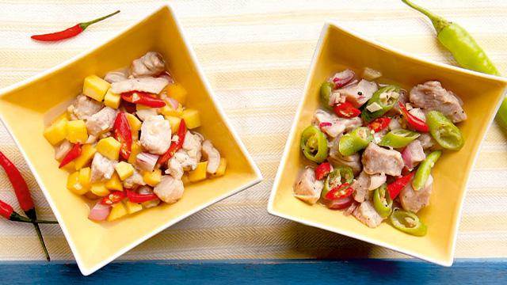
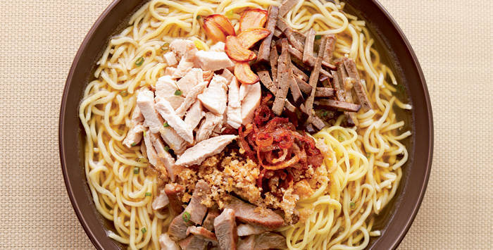
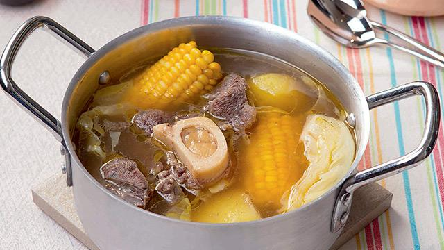
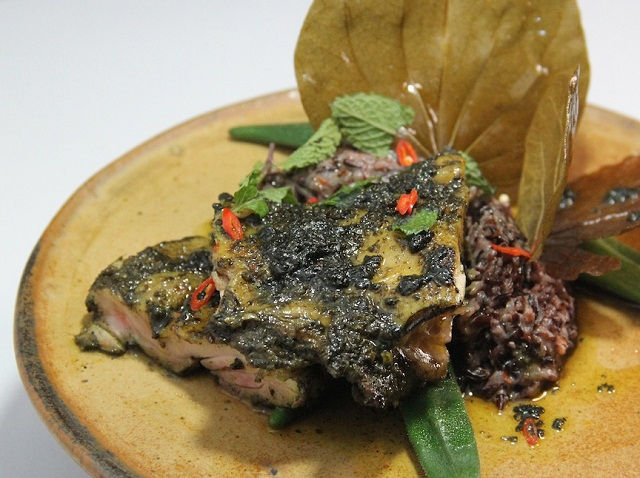
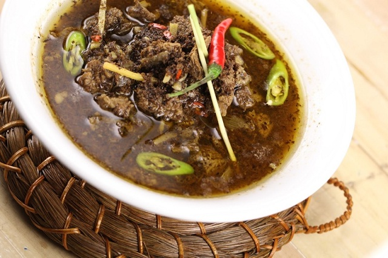

TOURIST DESTINATION
HOME PLACES FOOD
LUZON:
|
 Igado Igado is a traditional dish from the Ilocos Region in Luzon. It is made with pork and pork liver, cooked in soy sauce and vinegar |
 Dinakdakan Dinakdakan is a traditional dish from the Ilocos Region in Luzon. It is made from grilled pork, often including the face, ears, tongue, and liver |
 PoquiPoqui Poqui Poqui is a traditional dish from the Ilocos Region in Luzon. It is made with grilled eggplant, tomatoes, eggs, onions, and garlic |
VISAYAS:
 Kinilaw Kinilaw is a traditional dish from the Visayas and Mindanao. It is made with raw fresh fish marinated in vinegar or calamansi juice |
 La Paz Batchoy La Paz Batchoy is a traditional noodle soup from the La Paz district of Iloilo City, Visayas. It is made with egg noodles, pork, pork liver, beef, and pork broth |
 Pocherong Bisaya Pochero Bisaya is a traditional stew from the Visayas. It is commonly made with beef or pork, along with banana saba, cabbage, potatoes, and pechay |
MINDANAO:
|
 Pyanggang Pyanggang is a traditional dish from the Tausug people of Sulu, Mindanao. It is made with chicken cooked in coconut milk and flavored with burnt coconut, turmeric, garlic, onion, and spices |
 Rendang Rendang is a traditional dish found among the Maranao people of Lanao del Sur, Mindanao. It is made with beef or chicken cooked in coconut milk and flavored with spices, garlic, ginger, turmeric, and chili |
 Tiyula Itum Tiyula Itum is a traditional dish of the Tausug people of Sulu, Philippines. It is a black soup or stew made with beef or chicken, cooked in coconut milk and flavored with burnt coconut, turmeric, garlic, ginger, onion, and spices |